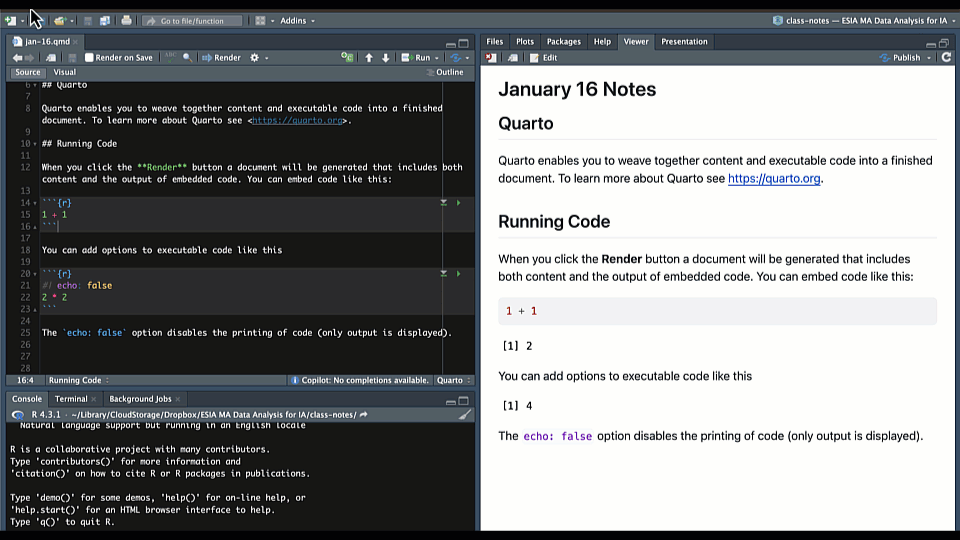

```{r}
summary(cars)
```Module 1.2
Meet ouR Tech Stack
Prework
- Install R, R Studio and the Tidyverse collection of packages if you have not done so already (see getting started).
- Read this markdown guide.
- Start a project folder for module 1 in the way that we learned in the getting started module. You can call it module-1 or whatever you like, but try to use a consistent naming convention like kebab-case, snake_case or camelCase.
- Create a new Quarto document in your project folder and name it
module-1.2.qmd. Use that to take notes and do the exercise at the end of the module.
Overview
In this module, we’ll build on your first experience with Quarto documents and go deeper into effective authoring and project organization. By the end, you should feel comfortable creating reproducible reports that include well-organized text, code, and outputs.
Why Project-Oriented Workflows Matter
When you’re just starting out, it’s tempting to save your files wherever is convenient—maybe the Desktop, maybe the Downloads folder. But as your analysis grows more complex or involves collaborators, maintaining an organized file structure becomes essential. A good Quarto project keeps all your materials—data, scripts, and reports—in a consistent, portable format. This not only helps avoid broken file paths, but also supports reproducibility, sharing, and long-term clarity.
A typical layout might include your main .qmd document, a data/ folder for input files, a separate folder for images or plots, and a designated location for rendered outputs. Keeping everything bundled in a single project folder also makes it easier to track changes and collaborate via Git or GitHub.
YAML Front Matter Revisited
You’ve already encountered the YAML block at the top of a Quarto document. Now let’s take a closer look at what it does.
The YAML front matter sets key metadata and document options. For example:
title: "My Report"
author: "Your Name"
date: today
format: html
execute:
echo: false
message: falseHere, the title, author, and date fields define the document header. The format field tells Quarto what type of file to create—HTML in this case. The execute section controls global options for code chunks. In this example, code won’t be shown (echo: false) and messages will be suppressed (message: false). These defaults apply to all chunks in the document, though individual chunks can override them.
Code Chunks in Depth
One of the key advantages of Quarto is the ability to weave together code and prose. You can insert a code chunk by typing three backticks and specifying the language, like this:
There are also a couple of shortcuts you can use to create code chunks in RStudio. You can use the keyboard shortcut Ctrl + Alt + I (or Cmd + Option + I on Mac) to insert a code chunk, or you can go to the menu bar and select on this icon:
You can also control how chunks behave using chunk options. Quarto supports a special #| syntax that lets you configure each chunk individually. For instance, you can use #| echo: to control whether the code is displayed along with the output, or #| label: to add a label to a code chunk (labels can be useful if you want to identify where an error is coming from or to reuse code from a chunk).

In this example, we’ve given the chunk a label (mtcars_plot) and hidden the code from the final output using echo: false. Notice how in the rendered version the first chunk shows the code but the second and third do not. This is useful when you want to show the results—like a plot—without showing the code that generated it. You can also hide messages, warnings, and even outputs in a similar way.
Your Turn!!
Let’s put everything together in a small project. Start by creating a new folder and placing a new Quarto document inside it. Here is an illustration to remind you how to do that (for a fuller explanation, review the Getting Started module).

Write a few short paragraphs of narrative text and include a code chunk that generates a plot with ggplot2. If you have images or data files, place them in subfolders and link to them using relative paths.
Once you’ve written your report, render the document to HTML. Open the result in your browser and make sure everything displays correctly. Along the way, try adjusting chunk options to control what appears in the final output. If you run into rendering errors, use the error messages to debug step-by-step—this is a valuable part of learning.
Final Tips
As a rule of thumb, always use relative file paths inside your Quarto projects. This means referring to files based on their position in the folder structure, not their full computer location. It helps keep your project portable so that it runs smoothly on any machine, whether yours or a collaborator’s.
When in doubt, label your chunks, write clearly, and remember that Quarto documents are meant to evolve. The more you write and render, the more confident you’ll become.